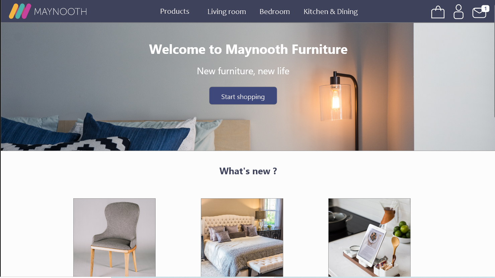

Course project

This project was done for the course UI/UX web design with Adobe XD on Udemy, for which I received a certificate at the end. It was an order for a web design and an app placed by a fictional client, called Maynooth Furniture. Requirements and a user persona were also provided in order to work on the project.

Requirements for this projects were provided as part of the course. Here you can look at the brief (requirements) and the user persona provided by the "client":
For this project, I focused on the brief and user persona provided to build the UI design. Working with Adobe XD was a very interesting experience as I was more familiar with Figma. I worked with components, different prototype interactions and specific functions like repeat grid to achieve the best design I could. In general, I thought it was a quite smooth tool to use for UI design, although the free plan that I used was at times restricting.
As part of the course, I often received feedback and provided feedback to my classmates. This was very good practice on identifying strengths and weaknesses on mine and others' designs. I was also able to test my design with a couple of users.
In addition, I really enjoyed creating an app version of my desktop design. During my studies for frontend developer I usually focused on creating a responsive design, i.e. the same design should work properly in desktop and mobile. Therefore, creating a different design for the app was very interesting.
You can check out my UI design for desktop at this link: Maynooth Furniture desktop UI
Maynooth Furniture app UI demo: